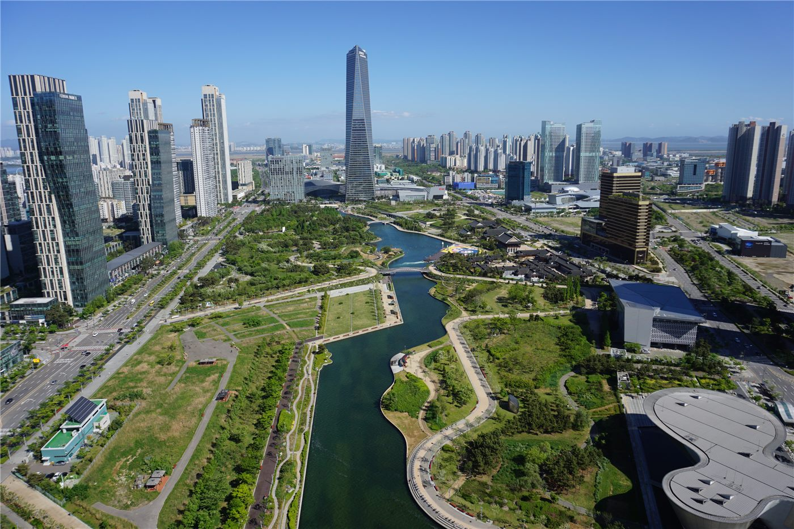

인천화교협회 대외교류 기록 공개… 매달 활동을 정리해 게시
인천화교협회가 월별 대외교류 활동 기록을 협회 게시판에 정리해 올리고 있다. 지역 기관과의 협약, 방문 교류, 행사 참여 내역이 담긴다.
주유민 기자 · 2026.08.29
橋화인소식

인천화교협회가 매달 진행한 대외교류 활동을 정리해 협회 홈페이지 공고란에 게시하고 있다. 2026년 들어 1월부터 매달 같은 형식의 기록이 올라와 있다.
광고 문의 · 300×250게시된 내용에는 지역 기관·단체와의 협약 체결, 상호 방문, 지역 행사 참여, 협회 방문객 응대 등이 포함된다. 지난 4월에는 인천기독병원과 협약을 체결한 사실도 기록됐다.
기록을 남기는 일의 의미
협회 활동 기록은 회원에게 협회가 무엇을 했는지 보여주는 자료이자, 시간이 지난 뒤 화교 사회의 활동을 되짚을 수 있는 1차 자료가 된다. 월 단위로 꾸준히 남기는 방식은 그 자체로 의미가 있다.
인천은 한국 화교 사회의 시작점으로 꼽히는 지역이다. 개항기 이후 형성된 차이나타운과 학교, 협회가 한자리에 모여 있어, 지역 기관과의 교류도 상대적으로 활발한 편이다.
회원이 확인할 수 있는 것
협회는 대외교류 기록 외에도 휴무 공고, 시설 이용 안내, 보건 사업 안내 등을 같은 게시판에 올린다. 영주권 관련 안내처럼 체류 자격에 직접 관계되는 공지도 이곳을 통해 전달된다.
협회 사무실 방문이나 전화로도 확인할 수 있다. 華橋時報는 인천·서울·부산 협회와 화교학교 공지를 매일 확인해 새로운 내용을 아침판에 싣는다.
출처·참고 (사실 확인용 — 본문은 직접 재작성)
· 仁川華僑協會 公告 2026 — 協會網站
· 仁川華僑協會 公告 2026 — 協會網站